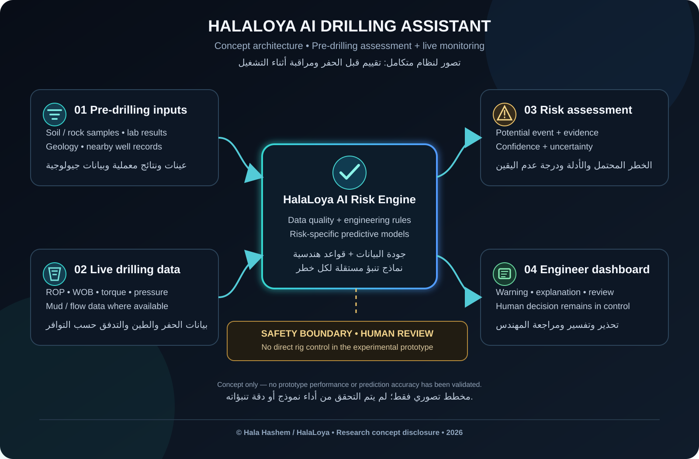

1. Before drilling
Review soil or rock sample results, geological information and permitted records from nearby wells. A surface soil sample alone cannot establish conditions at deep drilling intervals.
A proposed decision-support system that starts with pre-drilling sample and geological assessment, then monitors available drilling data to help engineers identify potential risks earlier.

Conceptual architecture only. It does not represent a tested product or a claim of measured performance.
Review soil or rock sample results, geological information and permitted records from nearby wells. A surface soil sample alone cannot establish conditions at deep drilling intervals.
Where authorized data access exists, ingest measurements such as rate of penetration, weight on bit, torque, pressure, and relevant drilling-fluid or flow data.
Develop and validate separate models for a defined event, beginning with a candidate such as lost-circulation risk if suitable historical data can be obtained.
Display the potential risk, supporting signals, uncertainty and data-quality limits. The experimental system remains advisory and does not control drilling equipment.
© 2026 Hala Hashem / HalaLoya. The original diagram, page text, and specific presentation are attributed to Hala Hashem / HalaLoya. Unauthorized copying, reproduction, or reuse of these materials without prior written permission is not permitted.
Important: this notice records an authorship claim and public disclosure date; it is not proof of a registered patent or exclusive ownership of the general idea. Patent rights, novelty and protection depend on applicable law and formal procedures. If patent protection is being considered, seek qualified IP advice before making further technical disclosures.